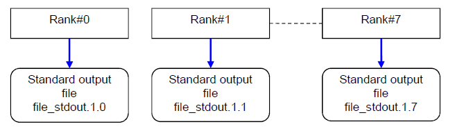
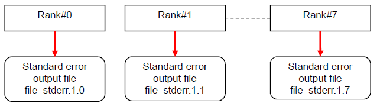
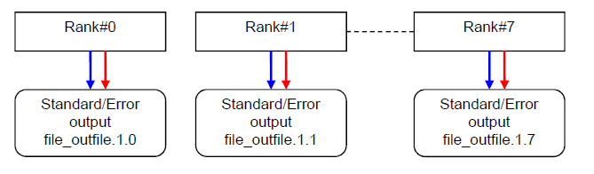

6.4. Standard output / Standard error output / Standard input¶
This indicates the specification dirextion of MPI program standard output / standard error output / standard input.
6.4.1. How to specify standard output / standard error output / standard input¶
At mpiexec, an option to output standard output / standard error output to a file and an option to read standard input from a file are provided.
On each parallel process and mpiexec command standard output standard error output, normally, it is output to the mpiexec command execution result file generated by the job operation software.
By default (no output option specified), a standard output/standard error output file is generated in the current directory using the following naming convention.
Create a directory in the “./output.jobid/” directory divided into 1000 ranks. In the directory divided into 1000 ranks, create a directory for the number of times the mpiexec command is executed.
Note
jobid strings line is showing the jobid.
1000_ranks strings line is showing rounds a rank or spawn number down to the nearest 1000.
mpiexec strings line is showing how many times of mpiexec command execution in job script.
rank strings line is showing a rank at the actual MPI_COMM_WORLD.
Example1 : JOBID=9999, Run the mpiexec command once, Standard output file path for rank number 100
./output.9999/0/1/stdout.1.100
Example2 : JOBID=9999, Execute the mpiexec command twice, Standard output file path for rank number 1500
If you change the output destination of standard output / standard error output by specifying mpiexec command option(-std-proc/-of-proc,-stdout-proc/-ofout-proc,-stderr-proc/-oferr-proc), valid only for the executable file executed by the mpiexec command with the option specified.
Standard input by mpiexec command redirection specification cannnot be used as each parallel process standard input.
Attention
You cannot specify the output options -of/-std,-ofout/-stdout and -oferr/-stderrfor the mpiexec command.
If specified, the default settings apply (job acceptance is possible).
The following error is output when executing the mpiexec command.
[WARN] PLE 0605 plexec ignore option -ofout/-stdout(stdout outputs to <file_path>).
You can specify the output options -std-proc/-of-proc,-stdout-proc/-ofout-proc and -stderr-proc/-oferr-proc for the mpiexec command. See section 1-3 below for the operation when specified.
Output the standard output of each parallel process to a separate file.
The standard output from each parallel process is output to the file name specified in -stdout-proc with the mpiexec execution count and rank number added.
$ mpiexec-stdout-procfile_stdout-n8./a.out

Attention
In the above example, the standard error output option is omitted, so the default file path is used for standard error output.
Output the standard error output of each parallel process to a separate file.
The standard error output from each parallel process is output to the file name specified in -stderr-proc with the mpiexec execution count and rank number added.
$ mpiexec-stderr-procfile_stderr-n8./a.out

Attention
In the above example, the standard output option is omitted, so the default file path is used for standard output.
Output the standard output and standard error output of each parallel process to separate files.
The standard output / standard error output from each parallel process is output to the file name specified in -std-proc with the mpiexec execution count and rank number added.
$ mpiexec-std-procfile_outfile-n8./a.out

Input the standard input of the parallel process from the specified file.
This indicates the example of inputting standard input from file_stdin.
The table below lists the output destinations of the standard output and standard error output for parallel processes, depending on whether the output options for the mpiexec command are specified.
The option settings for the mpiexec command can be found in the pjacl command.
You cannot change the option settings for the mpiexec command.
6.4.3. About standard output / standard error output when executing large-scale jobs¶
When running large jobs with more than 10,000 processes with the Fugaku, You must prevent a large number of processes from concentrating access to a single file or to the same directory.
Even if the user program limits the output rank, when an error occurs, a message may be output from all ranks. So, please set the standard output / standard error output files separately for each rank.
(*) The default is to split the directory every 1000 ranks and every mpiexec executions.
The default is not to create a file if there is no output to standard output/standard error output.
Whether or not to create an empty file can be set by the environment variable PLE_MPI_STD_EMPTYFILE={on|off} (default value is off).
Also, you can separate the output destination directory by using meta characters. Please devide directories to prevent increse of the mumber of files in one directory.
The directory is created even if you specify PLE_MPI_STD_EMPTYFILE=off (default value is off).
This example outputs a file according to the following conditions.
- generate directory per job id
- mpiexec Generate directories for each execution count
The meanings of the meta characters used here are shown below.
Meta characters
Meaning
%j
Job ID
%m
Number of mpiexec command executions
%r
Rank number and spawn number
For static process: rank number
For dynamic process: rank number @spawn number
If the destination is for each mpiexec command, this is replaced with empty.
%/Nr
Rounds a rank or spawn number down to the nearest N.
We use N=1000 in the above example.
Please refer to ‘2.3.6.9 The standard output and standard error output of mpiexec command [FX]’ of manual ‘Job Operation Software End-user’s Guide’ for the details on the meta characters that can be used in the output destination file name of the mpiexec command.